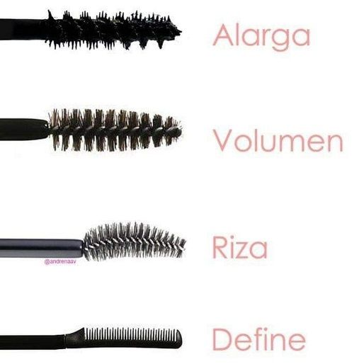

Máscara de pestañas
Según la forma de tus pestañas
Pestañas cortas, finas o delgadas
- Mascara Voluminizadora:
es perfecta si tienes pestañas finas y delgadas. Aportan un extra de densidad, volumen y
grosor.
- Mascara Alargadora:indicada si tienes pestañas cortas por que aportará longitud extra a
los extremos de tus pestañas.
Pestañas rigidas o con volumen
- Mascara rizadora: recomendadas si tienes pestañas rígidas y difíciles de peinar que necesiten un
rímel que las rice y ondule.
- Mascaras Transparentes: ideales si tienes pestañas naturales rizadas, largas y con
volumen.
Según su cepillo
Dependiendo de la forma de cepillo, este hace una función u otra:

¿Cómo aplicar una máscara de pestañas?
Pasos
- En primer lugar hay que limpiar bien los ojos y la cara.
- Con los ojos abiertos, colocamos la mascara lo más cerca posible del párpado y
aprieta durante unos segundos depués desplazalo en zigzag por todas las pestañas.
- Esperar unos seguidos a que la mascara seque para que se pege mejor a las pestañas.
- Ahora aplicaremos la mascara en las pestañas inferiores, de la misma forma en zigzag por todas las pestañas.
Nota: para eliminar los restos de mascara puedes hacerlo con un bastoncillo de
algodón
Página construida por Rebeca López